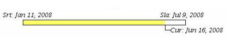
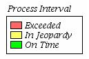
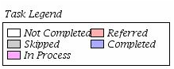
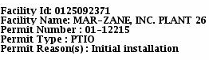
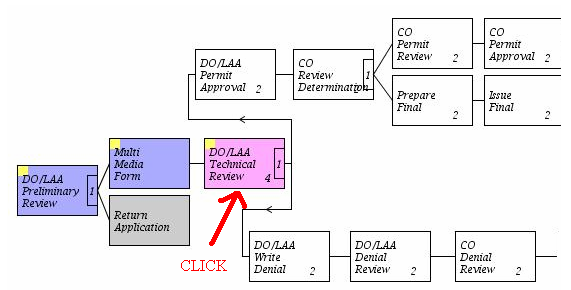
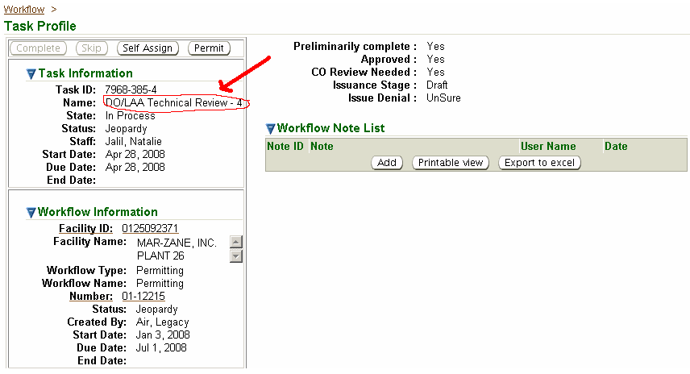

The Workflow Diagram
is a graphic representation of a specific Workflow ID where
you can see at a glance the current status and possible actions associated with
that workflow.
There is a color-coded timeline at the
top center of this Help page that indicates the Srt: (start date) and Sla: (due date),
as well as the Cur: (current date).
 The color represents the
workflow status: OK (on time/green); Jeopardy (nearing the deadline/yellow); or Late (past the deadline/red) as indicated in the Process Interval legendlocated at the top right of the page.

The workflow start and end date are
pre-programmed based on the processing time needed for the various workflow
types.It is important to keep this in
mind with respect to permitting.This
color-coded timeline for all permitting workflows will be based on a 180-day
clock although not all permit types will be subject to the regulatory
requirement. Below is the duration
pre-programmed for each workflow type and the number of days when the jeopardy
status begins.
Each block represents a
task in the workflow and is color coded according to the Task Legend located at the top left of
the page.

This identifies what stage each task is
in from Not
Completed to Completed.
Under the Task Legend is summary information about the specific workflow.In this example, a permitting workflow, you
will find facility and permitting information.
 Two numbers may be
displayed in the diagram.For the Technically Complete/T&C ready to review task represented
above, the number 4 represents the iteration for this task (i.e., the number of
times this task has been looped (repeated)).The number 1 represents this is a decision point where one decision is
to be made.Decision points will
determine a workflow path and will mark the paths NOT taken as “skipped” tasks.

Any block may be clicked to
go to the Task Profile for the associated task.

The Workflow Diagram page updates automatically each minute
but there is also a Reload button in the lower left part of the Help
page that you can use to update it at any time.
Some workflows are simple
one-step workflows categorized as Info
workflows.
Info workflows are contained in aggregate lists in the Task Profilepage.Some aggregate lists are
individual to a type, for example all compliance reports on a specific person’s
ToDos
list will be in one aggregate list.Other
aggregate lists contain multiple task types, e.g., emissions units shutdowns,
contact name changes, etc.Aggregate
tasks contain a one step Info workflow that can be dismissed (removing it from your ToDos list) by selecting the appropriate checkbox on theTask
Profile page.Once dismissed, aggregate list tasks are not retained as “completed” for
searching later.However, the types of
task contained in the aggregate lists can be found in other locations for the
specific facility.For example, you can
always see all compliance reports submitted by a facility from the third-level
menu Compliance Report(s) of theFacility Detail.Likewise,
for miscellaneous facility changes, such as changes in contact information or
emissions unit shutdowns, you can always see a log of events from the
third-level menu Event Logs of theFacility Detail.
Here is an example of an aggregate list:
The Task Information
and Workflow
Information to the right of
the list is associated with the Task ID
highlighted in the aggregate list.To
view the detailed information for other tasks in the aggregate list, click on
the Task ID and the detail information will change
to the right.
The following
business processes are represented by a unique workflow. Note that for tasks designated as milestone tasks in
the tables below, they system will generate an Event Log record when the task
is completed.These logs can be found in
the third-level menu, Event Logs of the
Facility Detail.Event
Logs are also viewable through Air
Services by the facility.If Y(yes)
is identified in the aggregate column of the table, this indicates the task
will be contained in an aggregate list as discussed above.
The permitting workflow
depicted below is used for all permit types - PTIs, PTIOs, Title V Permits, Request for
Administrative Permit Amendments (RAPMs).A workflow instance is created when the permit application, or RAPM is
submitted (except permit application submitted as a correction). The first step
in this workflow is associated with the permit application. The remaining steps
are associated with either the permit (normal case), or the denial (denial
case).
To the
left of the Workflow
Diagram page are the
following third-level menu options and the activities they allow:
Cancel: allows you to cancel this workflow.
Reassign: allows you
to view who is assigned to which tasks for this workflow and also allows
those with rights to assign a different user to a task(s).For more information on rights and user
roles, see the Help page entitled “Facility-Based User Roles.”
Change Due Date: allows
you to change the due date for this workflow. Keep in mind this will have
no affect on any regulatory clock or the systems functions to determine
if, for example, a permit was issued in the mandatory 180-day time period.
Summary: allows you to view a summary table of all tasks associated with
this workflow.
Processing Summary: allows
you to view a summary table of all tasks associated with this workflow with
respect to how much of the total time was spent on whose “clock”.
Notes: allows you to add new, edit existing, or delete notes associated
with this workflow.
The specific Help pages for each of the features above provides specific
details on the information and functions contained in those pages.